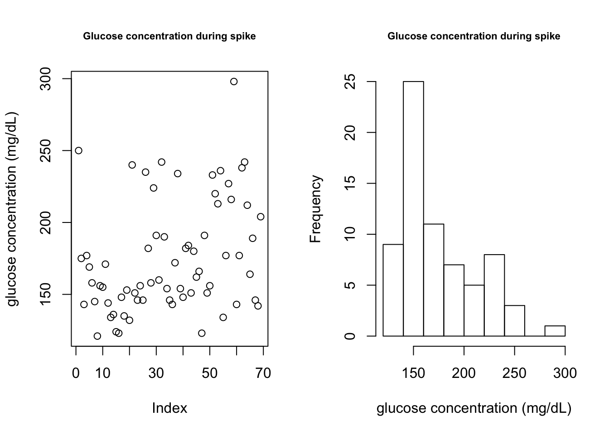
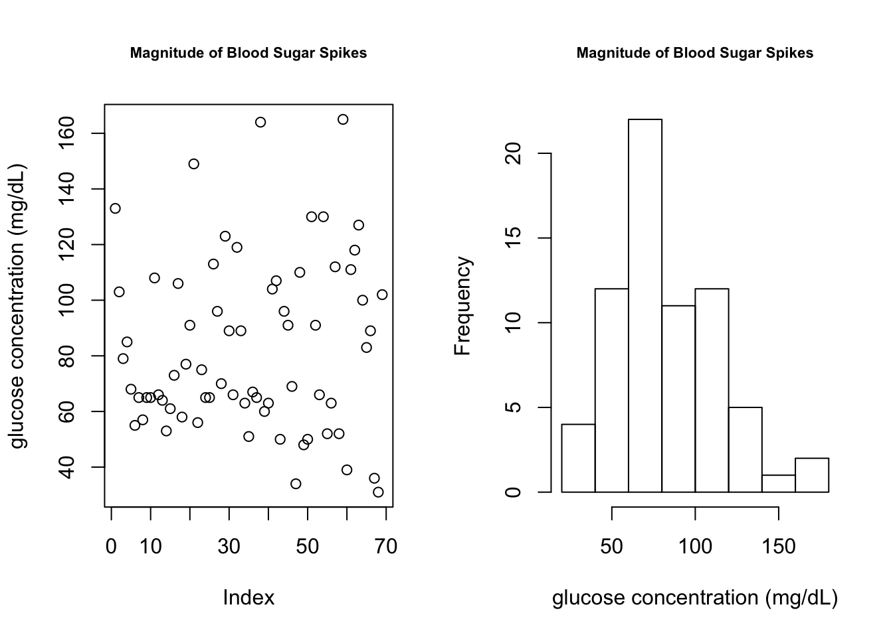
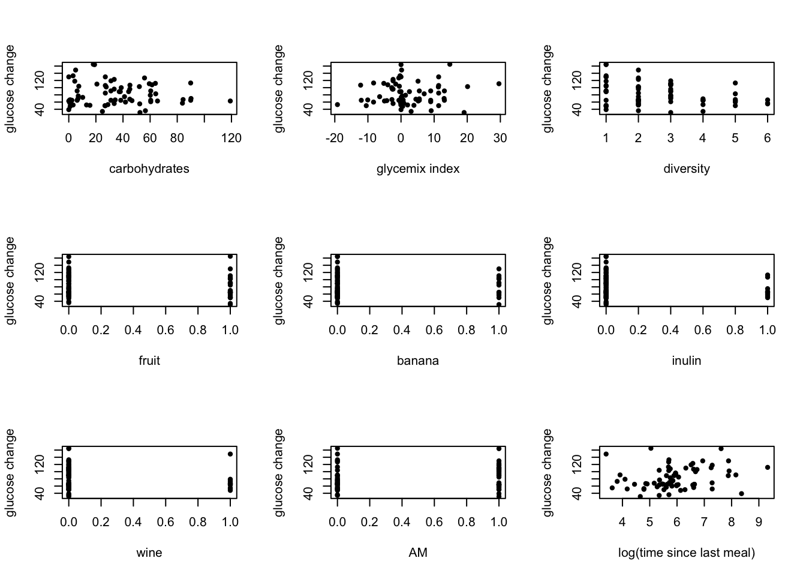

Last updated: 2017-09-13
Code version: 2c087f8
# combine features from food log with food timing
food.times = addDietaryFeatures(food.times, food.logs)
# associate glucose spikes with food features
cgm.meal.features <- associateFoodAndCGM(cgm.readings, food.times)
# print data set
current.table = cgm.meal.features[sample(1:nrow(cgm.meal.features), 10), ]
head(current.table) GlucoseDisplayDate GlucoseDisplayTime GlucoseValue
15069 5/22/15 21:13 134
12107 5/12/15 8:24 216
16602 5/28/15 22:07 140
6256 4/21/15 9:06 158
2399 4/7/15 13:07 135
4275 4/14/15 9:21 154
DisplayTime peak timeChange glucoseChange
15069 2015-05-22 21:13:00 max 130 51
12107 2015-05-12 08:24:00 max 30 52
16602 2015-05-28 22:07:00 max 35 49
6256 2015-04-21 09:06:00 max 95 59
2399 2015-04-07 13:07:00 max 70 58
4275 2015-04-14 09:21:00 max 90 63
windowMin calories carbohydrates sugar glycemicIndex AM
15069 2015-05-22 18:33:00 0.000 0.00000 0.00000 0.00000 0
12107 2015-05-12 07:24:00 15.651 3.18276 2.33352 1.98072 1
16602 2015-05-28 21:02:00 0.000 0.00000 0.00000 0.00000 0
6256 2015-04-21 07:01:00 0.000 0.00000 0.00000 0.00000 1
2399 2015-04-07 11:27:00 56.000 0.70000 0.21000 -0.14000 0
4275 2015-04-14 07:21:00 2.370 0.00000 0.00000 0.00000 1
fruit grain inulin banana wine last_meal_TIME meal_timing
15069 0 0 0 0 0 NaN 0
12107 1 0 0 0 0 1465.0 0
16602 0 0 0 0 0 NaN 0
6256 0 0 0 0 0 1456.0 0
2399 0 0 0 0 0 195.0 0
4275 0 0 0 0 0 397.5 0
foods groups diversity
15069 0
12107 coffee,pineapple drink,fruit 2
16602 0
6256 NA NA 1
2399 sole,lettuce fish,vegetable 2
4275 coffee,NA drink,NA 2# remove peaks without meals
cgm.meal.features = removePeaksWithoutMeals(cgm.meal.features)
# print final number of observations
peaks = length(cgm.meal.features$peak[cgm.meal.features$peak == "max"])
print(paste(peaks, " total glucose spikes" , sep = ""))[1] "69 total glucose spikes"
par(mfrow = c(1,2))
plot(cgm.meal.features$GlucoseValue, main = "Glucose concentration during spike", ylab = "glucose concentration (mg/dL)", cex.main = 0.7)
hist(cgm.meal.features$GlucoseValue, main = "Glucose concentration during spike", xlab = "glucose concentration (mg/dL)", cex.main = 0.7)
plot(cgm.meal.features$glucoseChange, main = "Magnitude of Blood Sugar Spikes", ylab = "glucose concentration (mg/dL)", cex.main = 0.7)
hist(cgm.meal.features$glucoseChange, main = "Magnitude of Blood Sugar Spikes", xlab = "glucose concentration (mg/dL)", cex.main = 0.7)
## remove variables that wont be used for prediction
features = c("timeChange","carbohydrates","glycemicIndex",
"AM","fruit","grain","inulin","banana",
"wine","last_meal_TIME" ,"diversity")
predictors <- cgm.meal.features[,names(cgm.meal.features) %in% features]head(predictors) timeChange carbohydrates glycemicIndex AM fruit grain inulin banana
46 100 3.166204 -0.301112 0 0 0 0 0
235 305 52.062400 20.096800 1 1 0 0 1
347 95 60.141921 1.353600 0 0 1 0 0
463 100 26.951200 11.363400 1 1 0 0 1
521 50 45.000000 4.490000 0 0 1 0 0
586 40 52.328212 0.345464 0 0 1 0 0
wine last_meal_TIME diversity
46 0 300.0000 1
235 0 298.3333 2
347 1 60.0000 3
463 0 427.5000 2
521 0 175.0000 2
586 1 37.5000 6# define a data frame with predictors and response
outcome.predictors = cbind(cgm.meal.features$glucoseChange, predictors)
# only time since last meal was transformed
outcome.predictors$last_meal_TIME = log(outcome.predictors$last_meal_TIME)par(mfrow = c(3,3))
## compare the predictors with the outcome to find the relationship
plot(outcome.predictors$carbohydrates, outcome.predictors[, 1], ylab = "glucose change", xlab = "carbohydrates", pch = 20)
plot(outcome.predictors$glycemicIndex, outcome.predictors[, 1], ylab = "glucose change", xlab = "glycemix index", pch = 20) # glycemic index mostly 0
plot(outcome.predictors$diversity, outcome.predictors[, 1], ylab = "glucose change", xlab = "diversity", pch = 20)
plot(outcome.predictors$fruit, outcome.predictors[, 1], ylab = "glucose change", xlab = "fruit", pch = 20)
plot(outcome.predictors$banana, outcome.predictors[, 1], ylab = "glucose change", xlab = "banana", pch = 20)
plot(outcome.predictors$inulin, outcome.predictors[, 1], ylab = "glucose change", xlab = "inulin", pch = 20)
plot(outcome.predictors$wine, outcome.predictors[, 1], ylab = "glucose change", xlab = "wine", pch = 20)
plot(outcome.predictors$AM, outcome.predictors[, 1], ylab = "glucose change", xlab = "AM", pch = 20)
plot(outcome.predictors$last_meal_TIME, outcome.predictors[, 1], ylab = "glucose change", xlab = "log(time since last meal)", pch = 20)
sessionInfo()R version 3.3.3 (2017-03-06)
Platform: x86_64-apple-darwin13.4.0 (64-bit)
Running under: OS X El Capitan 10.11.6
locale:
[1] en_US.UTF-8/en_US.UTF-8/en_US.UTF-8/C/en_US.UTF-8/en_US.UTF-8
attached base packages:
[1] grid parallel splines stats graphics grDevices utils
[8] datasets methods base
other attached packages:
[1] ggplot2_2.2.1 gtable_0.2.0 gridExtra_2.2.1
[4] randomForest_4.6-12 gbm_2.1.3 lattice_0.20-35
[7] survival_2.41-3 kknn_1.3.1 leaps_3.0
[10] lubridate_1.6.0
loaded via a namespace (and not attached):
[1] igraph_1.0.1 Rcpp_0.12.10 knitr_1.17 magrittr_1.5
[5] munsell_0.4.3 colorspace_1.3-2 plyr_1.8.4 stringr_1.2.0
[9] tools_3.3.3 git2r_0.19.0 htmltools_0.3.5 lazyeval_0.2.0
[13] yaml_2.1.14 rprojroot_1.2 digest_0.6.12 tibble_1.3.0
[17] Matrix_1.2-8 evaluate_0.10.1 rmarkdown_1.6 stringi_1.1.5
[21] scales_0.4.1 backports_1.0.5 This R Markdown site was created with workflowr